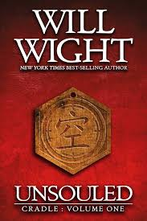

Current Book
I am currently reading the "Cradle" series by will wight. It is a fantasy series in which the main character is trying to advance through different levels of power. He begins much weaker than most people, but does a lot of training.
| Pros | Cons |
|---|---|
| Good world building | Some cliches |
| Interesting Magic System | Slow start |
Rating so far
I would give this series a 4 out of 5 stars